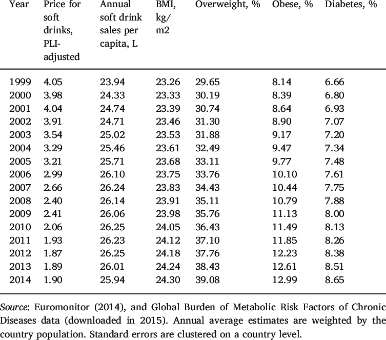

Effects on Human Life
- Soft drinks are a part of our life wherever we go soft drinks available. Soft drinks have many health problems.
- Obesity: Regular consumption of soft drinks has been linked to weight gain and obesity. These beverages are typically high in calories and sugar, but low in nutritional value. The excess calories from soft drinks can contribute to an imbalance between energy intake and expenditure, leading to weight gain and an increased risk of obesity.
- Diabetes: Soft drinks with high sugar content have been associated with an increased risk of developing type 2 diabetes. Frequent consumption of sugary beverages can lead to insulin resistance and impaired glucose metabolism, increasing the likelihood of developing this metabolic disorder.
- Dental Issues: Soft drinks, especially those containing sugars, can contribute to tooth decay and cavities. The sugar in these beverages interacts with bacteria in the mouth, producing acids that erode tooth enamel. Additionally, the high acidity of some soft drinks can directly damage tooth enamel.
- Bone Health: Soft drinks, particularly those that contain phosphoric acid, may negatively impact bone health. The phosphoric acid can interfere with calcium absorption and contribute to decreased bone mineral density, potentially increasing the risk of osteoporosis and fractures.
- Cardiovascular Health: The excessive consumption of soft drinks, especially those with high sugar content, has been linked to an increased risk of cardiovascular diseases. High sugar intake can lead to obesity, elevated blood pressure, and dyslipidemia (abnormal lipid profile), all of which are risk factors for heart disease.
- Dehydration: Despite being liquids, some soft drinks can contribute to dehydration. Caffeinated soft drinks, such as colas, act as diuretics, causing increased urine production and potentially leading to fluid imbalance if not compensated by adequate water intake.
- Psychological and Behavioral Effects: Some studies have suggested a possible link between the consumption of soft drinks, especially those containing caffeine and artificial additives, and behavioral issues such as hyperactivity and attention deficit disorder in children. However, more research is needed to establish a definitive causal relationship.
Statistical Analysis on Consumption of Softdrinks
